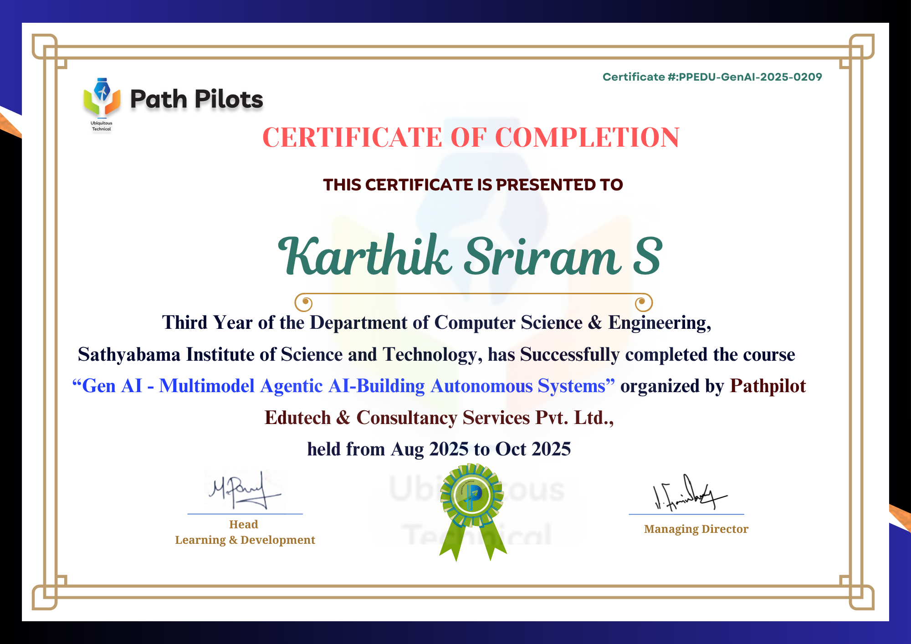
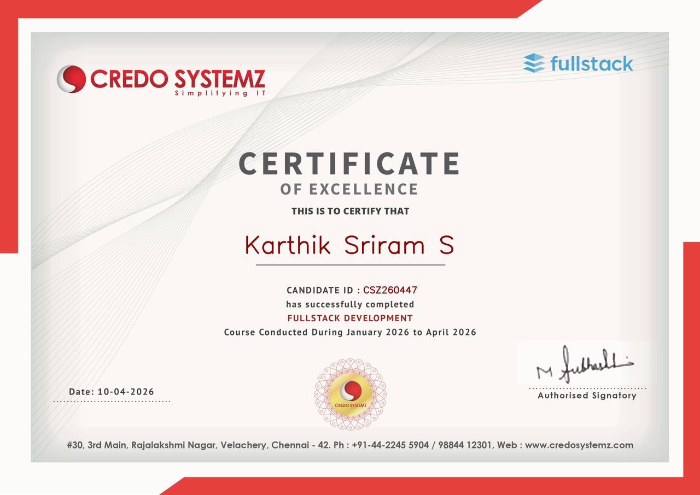

Sathyabama Institute of Science and Technology
B.E. - Computer Science and Engineering, Chennai, India
- CGPA
- 7.6 / 10
- Degree
- B.E. CSE
Final Year CSE Student | Chennai, India
I am S. Karthik Sriram, a final year Computer Science and Engineering student with hands-on experience in machine learning, NLP, data analysis, generative AI, and full-stack software development.
About
I am a final year Computer Science and Engineering student with practical experience in Python, SQL, Pandas, TensorFlow, Scikit-learn, NLP, and full-stack development. I enjoy building deployable projects that connect clean software design with data-driven problem solving.
For placement roles, I bring programming fundamentals, core CS coursework, deployment awareness, and project experience across student management systems, fake job detection, traffic optimization, and generative AI decision-support workflows.
Python, Java, C/C++, JavaScript, SQL, OOP, DSA, DBMS, and maintainable project structure.
TensorFlow, Scikit-learn, TF-IDF, classification models, prompt engineering, and GenAI workflows.
Pandas, NumPy, Power BI, Tableau, Excel, statistical analysis, and SQL-backed reporting.
Education
B.E. - Computer Science and Engineering, Chennai, India
Skills
Python, Java, C, C++, JavaScript, SQL
Machine Learning, TensorFlow, Scikit-learn, NLP, Pandas, NumPy, Generative AI, Prompt Engineering
HTML5, CSS3, Streamlit, Beautiful Soup, pytesseract, PyPDF2, python-docx, Git, GitHub, VS Code, Linux
MySQL, CRUD Operations, Database Design, 3NF Normalization, Power BI, Tableau, Excel, Statistical Analysis
Data Structures and Algorithms, OOP, DBMS, Operating Systems, Computer Networks
Projects
Designed and launched a live student result portal for academic result management with a clear user-facing interface and SQL-backed data flow.
Built a fraud detection system for identifying fake job postings using NLP preprocessing, TF-IDF features, and supervised ML classifiers.
Developed a TensorFlow-based traffic signal control system to support adaptive signal decisions across simulated multi-lane traffic.
Architected a generative AI decision-support system that turns diverse inputs into structured assistance for recurring management workflows.
Research and Leadership
Processed 17,880+ annotated job postings through text preprocessing and TF-IDF vectorization, then evaluated classifier performance using precision, recall, and F1-score.
Led media strategy for 5+ technical events per semester at Sathyabama Institute of Science and Technology.
Coordinated participant management for a national-level hackathon with 100+ participants across registration, orientation, and event rounds.
Certifications
HackerRank Certification
PDFReliance Foundation
PDFNASSCOM Gold

Path Pilot

Credo Systemz
PDFForage
PDFForage
PDFData Analytics
PDFFrontend Engineering
Contact
I am seeking software engineering, data analyst, and AI/ML internship opportunities at product-based companies. Reach me directly through phone, email, GitHub, or LinkedIn.